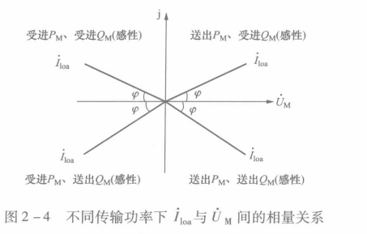

传统站验收（by lemon）
警告⚠️：请勿误入带电间隔，请勿乱碰运行设备
绝缘测试
提示：记得拆接地线，记录绝缘不合格的线
步骤：
- 万用表验电，证明回路无电。
- 摇 对地绝缘
- 整组线1000V，大于1M欧合格；不进装置外部线1000V，大于10M欧合格；进装置内部线500V，大于20M欧合格。
- 电压回路、电流回路、控制回路摇 线与线之间的绝缘
- 整组线1000V，大于1M欧合格；不进装置外部线1000V，大于10M欧合格；进装置内部线500V，大于20M欧合格。
- 记得放电（被电过😭）
线芯标准
二次接地铜排：50平方毫米
电流回路：4平方毫米（南网要求2.5方即可，但实际一般用4方）
电压回路：4平方毫米（南网要求1.5方即可，但实际一般用4方）
接地线：4平方毫米
电流回路端子：OT端子（圈接，广西电网村规）
光衰
提示：TX为发，RX为收，我的收是你的发；插拔光纤时，注意对准光纤上的小缺口，不要硬怼
步骤：
光功率计测光衰，或装置看，光发和光收在一个合理范围内，每经过一个装置，衰耗多0.5dB。
CT
伏安特性
注意⚠️：打开连片，防止测试电流进入装置！
目的：测拐点
步骤：
变比极性
注意⚠️：打开连片，防止测试电流进入装置！ 目的：验证回路接对抽头（实际变比符合定值变比）；确保减极性
步骤：
升流
注意⚠️：恢复连片，防止CT二次侧开路！
目的：验证回路接对绕组（保护用保护绕组，测量用测量绕组，计量用计量绕组）
步骤：
铭牌验证
验证试验结果符合铭牌，回路所用变比符合铭牌，回路所用绕组符合铭牌
保护装置
功能校验
提示：记得投压板
目的：验证装置正确动作
步骤：看装置报文；端子排量节点闭合
传动
验证跳闸出口回路（操作箱到机构箱）正确性；同一个跳匝出口回路传动一次即可。
测控装置
遥信
注意⚠️：确保信号的唯一性
目的：验证后台信号正常
提示：智能站除了在后台看信号，智能录波装置也要看
后台信号组成
提示：除了间隔，主接线图也要看，觉得眼睛太花可以清闪
- 开关位置：分、合
- 线路刀闸位置：分、合、没有位置（此位置状态不是每个后台系统都有）
- 接地刀闸位置：分、合、没有位置（此位置状态不是每个后台系统都有）
提示：红为发信，描述信号的文字正在生效；绿为复归，描述信号的文字失效
- 软报文：发、复归
- 可以校验保护功能的同时，在后台验收对应的软报文信号
- 测控装置直接开出软报文信号也可
- 硬节点：发、复归
- 实际做：电机电源消失、加热电源消失、控制回路断线等断开相应电源空开即可
- 端子点发对应信号
- 硬压板：投入、退出
- 软压板：投入、退出
- 网络：A网通/断、B网通/断（要等待，短几十秒，长两分钟）
遥测
提示：后台显示的是一次系统的电流值，记得换算
步骤
- 于测量电流回路，用保护仪加量。
- 不平衡、满载至少各加一组
- 验证A、B、C相电流，P的±、Q的±
原理

如果逆时针旋转九十度，U轴竖起来，即0度角为竖线。P上正下负，Q右正左负
加量示例（以变比600/5为例）
不平衡
| 电流 | 幅值 | 角度 |
|---|---|---|
| IA | 1.00A | 45 |
| IB | 2.00A | -75 |
| IC | 3.00A | 165 |
此时：
- 一次值： A：120A B：240A C：360A
- P为正（送），Q为负（受）
满载
| 电流 | 幅值 | 角度 |
|---|---|---|
| IA | 5.00A | -45 |
| IB | 5.00A | -165 |
| IC | 5.00A | 75 |
此时：
- 一次值： A：600A B：600A C：600A
- P为正（送），Q为正（送）
其它角度
| 电流 | 幅值 | 角度 |
|---|---|---|
| IA | ?.00A | 135 |
| IB | ?.00A | 15 |
| IC | ?.00A | 255 |
此时：
- 一次值： A：?120A B：?120A C：?*120A
- P为负（受），Q为负（受）
| 电流 | 幅值 | 角度 |
|---|---|---|
| IA | ?.00A | -135 |
| IB | ?.00A | -255 |
| IC | ?.00A | -15 |
此时：
- 一次值： A：?120A B：?120A C：?*120A
- P为负（受），Q为正（送）
遥控
步骤：投对应遥控硬压板，遥控成功一次；退对应遥控硬压板，遥控不成功一次；有的站要验证同期合闸硬压板的准确性
提示：如果实际不能遥控，可以量出口节点，节点离机构箱越近越好。
- 开关：分、合
- 线路刀闸：分、合
- 接地刀闸不给遥控
- 软压板
- 定值修改（一些站可以）
- 遥控空开（少部分站可以）
- 变压器挡位：上升、下降
同期合闸
步骤：保护仪加量母线电压和同期电压，先验证合闸成功一次；再验证角差重合不成功，压差重合不成功，频差重合不成功
无压合闸（一般不用验）
步骤：保护仪加量母线电压和同期电压，实现
- 母线电压检定有压（看有压定值），同期电压检定无压（看无压定值），重合成功
- 母线电压检定无压（看无压定值），同期电压检定有压（看有压定值），重合成功
- 母线电压检定有压（看有压定值），同期电压检定有压（看有压定值），重合不成功
PT
升压
步骤
- 于电压并列柜处，在 母线电压回路 和 同期电压回路 上 升压（不平衡，满载57.735V）
- 用万用表交流档 量 母线电压空开的上端，若万用表读数和加量符合，给上母线电压空开
- 保护装置在装置上看采样；测控装置在装置上看采样，并同时在后台看采样（一次值）
机构箱
防跳
注意⚠️：防跳回路要设置在机构箱
步骤：
一直保持手合不松手的同时，另一边点跳，断路器处于分闸状态并且不合闸，说明防跳成功
规范性/收尾
检测电流回路一点接地
步骤
- 把电流回路的接地线（一般是黄绿色）拆除
- 选择万用表蜂鸣档（响档），先短接红黑表笔确保万用表正常
- 黑表笔接地，红表笔点回路，若有响声——说明该回路有多点接地，需要额外查其它接地点；若无响声——说明该回路为一点接地，合格。
- 恢复接地线，用手拨一下看线是否接紧
- 选择万用表蜂鸣档（响档），先短接红黑表笔确保万用表正常
- 黑表笔接地，红表笔点回路，若有响声——说明接地线已正确恢复；若无响声——说明接地线没接好
刻头
确保一根线两端的刻头是一样的
紧线
盯紧点外包！用手扯一扯
查直流串电（直流寄生回路）
步骤：
- 万用表直流电压档，黑表笔接地，红表笔点任一直流电源，验证万用表功能正常
- 断开全部直流电源空开
- 只给上其中一个直流空开，确保全部直流空开只有一个空开给上
- 黑表笔接地，红表笔点给上空开的下端（没记错的话是左负右正），再逐一量其余未给上的空开的下端，如果未给上空开的下端无电压，则无直流串电现象（无直流寄生回路）；如果未给上空开的下端有电压，则有直流串电现象（有直流寄生回路），检查接线
- 打下该直流空开，选择另一个直流空开打上，重复上述操作，直至每个直流空开都验证一遍
交流接入
打印机正常，照明灯正常
对时接入
装置对上时
接入
先接不带电侧，再接入带电侧，用万用表直流档量电压，有电压变化说明线没接错
投运
用相位仪核相
相位仪的电压一般接：A相、N线
意味着电流的相位基准为A相电压的角度（即默认A相电压为0度）
钳A、B、C、N线电流，N线电流应该小于40m（好像）